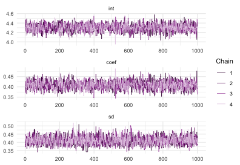

simple and scalable statistical modelling in R
simple
greta models are written right in R, so there’s no need to learn another language like BUGS or Stan
scalable
greta uses Google TensorFlow so it’s fast even on massive datasets, and runs on CPU clusters and GPUs
extensible
it’s easy to write your own R functions and packages using greta
Basic example
Here’s a Bayesian linear regression model for the iris data using greta:
x <- iris$Petal.Length
y <- iris$Sepal.Length
draws <- mcmc(
m,
n_samples = 1000,
chains = 4
)
bayesplot::mcmc_trace(draws)
plot of chunk vis